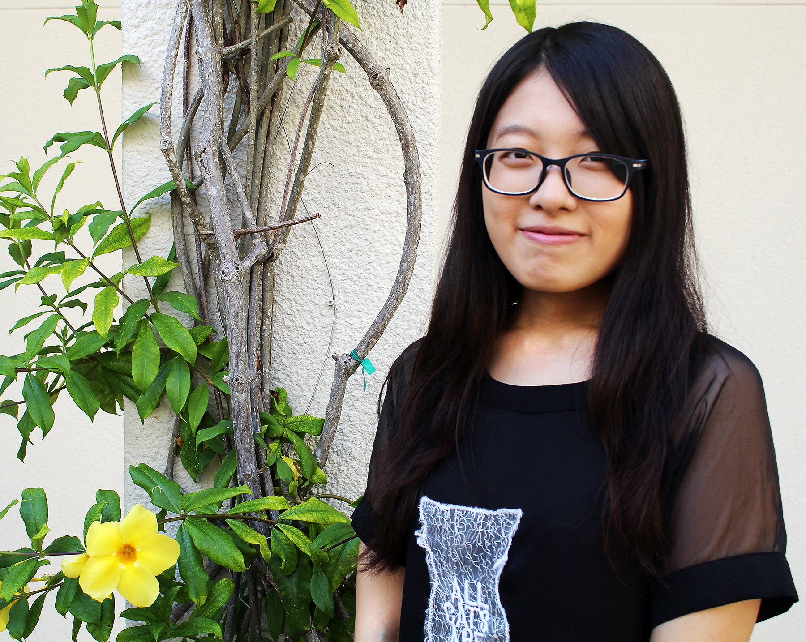

On study
M.A.in Journalism
University of Miami,Miami,Florida.
June.2015
B.A.in Journalism
East China University of Political Science and Law,Shanghai,China.

7275,SW90th ST,#C412 Miami,FLOn study
M.A.in Journalism
University of Miami,Miami,Florida.
June.2015
B.A.in Journalism
East China University of Political Science and Law,Shanghai,China.
April.2014-Dec.2014
Department of Economic News,Jiefang Daily(Shanghai)
Journalist
Dec.2014-May.2015
Department of Formula One Express, Jingwu Sports(Shanghai)
Editor
Sep.2011–May.2014
Culture and Arts Association(East China University of Political Science and Law)
Vice Secretary
Sep.2012–May.2013
Xinshi Media(East China University of Political Science and Law)
Associate Director
July.2014
Guiding audience and mediate conflicts between merchants.
May.2015
Shanghai Strawberry Music Festival
Receiving singers
Feb.2014
The Status Quo of Storytelling and Ballad Singing in Suzhou dialect, an intangible Cultural Heritage
Write bidding document, draft schedule and event budget, ensure accommodation and transportation, organize records and join the thesis defense for the research group.
Nov.2014
The Development of Art Troupes in Non-arts colleges
Draft schedule, contact schools, lead the research team during investigation and draft the final thesis for the research group.
2011
Social Work Scholarship of the year at East China University of Political Science and Law
2012
Social Work Scholarship of the year at East China University of Political Science and Law
2013
Social Work Scholarship of the year at East China University of Political Science and Law
Merit member of the Youth League of the year
2014
Social Work Scholarship of the year at East China University of Political Science and Law